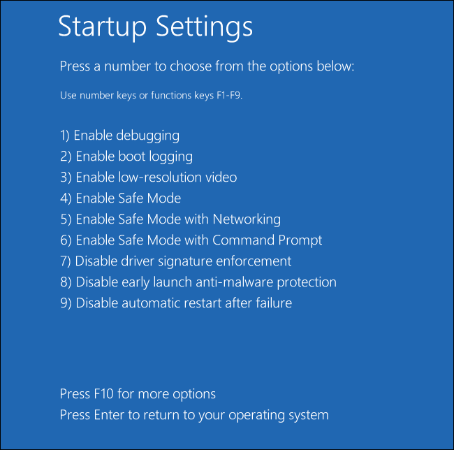

If you’re looking to use a hypervisor for analysis and reverse engineering tasks, check out HyperDbg Debugger. It’s a hypervisor-based debugger designed specifically for analyzing, fuzzing, and reversing applications. A free and comprehensive tutorial on hypervisor-based reverse engineering is available at OpenSecurityTraining2’s website (preferred) and YouTube, which demonstrates numerous practical examples on how to utilize hypervisors for reverse engineering.
Notice: The Hypervisor From Scratch tutorial is completely revised in August 2022. Codes from all parts are updated, unnecessary details are removed, and new explanations and materials are added to the tutorial.
Introduction
Welcome to the first part of a multi-part series of tutorials called “Hypervisor From Scratch”. As the name implies, this course contains technical details to create a basic Virtual Machine based on hardware virtualization. If you follow this tutorial, you’ll be able to create your own virtual environment and understand how VMWare, VirtualBox, KVM, and other virtualization software use processors’ facilities to create a virtual environment. Moreover, you can learn how the “VMM” module of the HyperDbg Debugger works internally.
The full source code of this tutorial is available on GitHub :
[https://github.com/SinaKarvandi/Hypervisor-From-Scratch]
Table of Contents
- Introduction
- Table of Contents
- Overview
- Hypervisors and Platforms
- Installing Tools
- Configuring A Testing Environment
- Creating A Driver
- Disabling The Driver Signature Enforcement (DSE)
- Nested-Virtualization
- Hyper-V’s Nested-Virtualization
- VMware Workstation’s Nested-Virtualization
- Concepts
- VMX Instructions
- Related Work
- Conclusion
- References
Overview
Both Intel and AMD support virtualization in their modern CPUs. Intel introduced (VT-x technology) that was previously codenamed “Vanderpool” on November 13, 2005, in Pentium 4 series. The CPU flag for VT-x capability is “VMX” which stands for Virtual Machine eXtension.
AMD, on the other hand, developed its first generation of virtualization extensions under the codename “Pacifica” and initially published them as AMD Secure Virtual Machine (SVM), but later marketed them under the trademark AMD Virtualization, abbreviated AMD-V.
There are two types of hypervisors. The “type 1” hypervisor is called a “bare-metal hypervisor” or “native” because it runs directly on a bare-metal physical server. A type 1 hypervisor has direct access to the hardware. With a type 1 hypervisor, there is no operating system to load as the hypervisor itself has the necessary functions to manage the system boot and startup.
Contrary to a type 1 hypervisor, a type 2 hypervisor loads inside an operating system, just like any other application. Because the type 2 hypervisor has to go through the operating system and is managed by the OS, the type 2 hypervisor (and its virtual machines) will run less efficiently (slower) than type 1 hypervisors.
Even though most of the concepts about the virtualization in Intel and AMD processors are the same, but there are some differences between Intel VT-x and AMD-V. For example, Intel and AMD use different instruction sets for virtualization.
The rest of these tutorials mainly focus on VT-x because Intel CPUs are more popular and widely used.
Hypervisors and Platforms
These concepts are platform independent, which means you can easily run the same code routine in both Linux or Windows and expect the same behavior from the CPU, but I prefer to use Windows as its more easily debuggable (at least for me.), but I try to give some examples for Linux systems whenever needed.
Linux kernel manages faults like #GP and other exceptions and tries to avoid the kernel panic and keep the system up; thus, it’s better to test something like a hypervisor or any CPU-related programs. In contrast, Windows never tries to manage any unexpected exception and shows a Blue Screen Of Death whenever an unexpected exception occurs; therefore, you might get lots of BSODs while testing your hypervisor.
Considering the fact that I might (and will) make mistakes like misinformation, wrong implementation, or forget about mentioning some essential explanations in these series, I should say sorry in advance, and I’ll be glad and open to every comment that tells me the mistakes in the technical details. You can use the comments below to notify me about these possible errors.
That’s enough. Let’s get started!
Installing Tools
First, we need to install Visual Studio with WDK (Windows Driver Kit).
You can download the community (free) version of the Visual Studio:
[https://visualstudio.microsoft.com/vs/community].
After installing Visual Studio, you can get the WDK from the below link:
[https://docs.microsoft.com/en-us/windows-hardware/drivers/download-the-wdk].
We’ll use WinDbg to debug our hypervisor. We can use WinDbg and WinDbg Preview to debug our hypervisor.
WinDbg is available in Windows SDK:
[https://developer.microsoft.com/en-us/windows/downloads/windows-sdk/]
Afterward, we should connect to debug the Windows kernel using WinDbg. You can read the following links to connect WinDbg to debug the kernel using KDNET.
- Setting Up KDNET Network Kernel Debugging Manually
- Setting Up KDNET Network Kernel Debugging Automatically
The next step is downloading OSR Driver Loader. We use this tool to load our driver. You can download it using the below link:
[https://www.osronline.com/article.cfm?article=157].
Finally, we need to download SysInternals DebugView for printing the DbgPrint() results.
Configuring A Testing Environment
Most of the codes in this tutorial have to run at the kernel-level, and we must set up a Linux Kernel Module or a Windows Driver for this purpose.
As configuring a Virtual Machine Monitor (VMM) involves lots of assembly codes, we should be able to embed inline assemblies within our kernel project.
WDK (and also user-mode applications) no longer support inline assembly in an x64 environment, so we should be able to create a simple x64 project with the support for inline assembly codes.
I explained it step by step in one of my posts, so I highly recommend reading this topic to create a project with inline assembly support before continuing the rest of this part.
Now it’s time to create a driver!
Creating A Driver
There is a good article here if you want to start with Windows Driver Kit (WDK).
For the first example, we’ll create an elementary WDK driver. In WDK, we need two essential functions, first is a Driver Entry function that works as a starting point where the driver starts its execution whenever it is loaded. The second is for Driver Unload, responsible for removing the objects used in the driver.
In the driver entry, our driver needs to register a device so we can communicate with our virtual environment from the user-mode. On the other hand, I defined DrvUnload, which uses the PnP Windows driver feature, and we can easily unload our driver and remove the device, then reload and create a new one.
The following code is responsible for creating a new device :
1
2
3
4
5
6
7
8
9
10
11
12
RtlInitUnicodeString(&DriverName, L"\\Device\\MyHypervisor");
RtlInitUnicodeString(&DosDeviceName, L"\\DosDevices\\MyHypervisor");
NtStatus = IoCreateDevice(DriverObject, 0, &DriverName, FILE_DEVICE_UNKNOWN, FILE_DEVICE_SECURE_OPEN, FALSE, &DeviceObject);
if (NtStatus == STATUS_SUCCESS)
{
DriverObject->DriverUnload = DrvUnload;
DeviceObject->Flags |= IO_TYPE_DEVICE;
DeviceObject->Flags &= (~DO_DEVICE_INITIALIZING);
IoCreateSymbolicLink(&DosDeviceName, &DriverName);
}
All in all, you can compile the following file to create our first WDK driver in Visual Studio (with WDK installed).
It contains a Driver Entry function which creates a device and registers the unloading routines. Whenever the driver is loaded, the DriverEntry function is called, and when we unload it, DrvUnload will be called. This function will remove the device that we registered before.
1
2
3
4
5
6
7
8
9
10
11
12
13
14
15
16
17
18
19
20
21
22
23
24
25
26
27
28
29
30
31
32
33
34
35
36
37
38
39
40
41
42
43
44
45
46
47
48
49
#include <ntddk.h>
#include <wdf.h>
#include <wdm.h>
NTSTATUS
DriverEntry(PDRIVER_OBJECT DriverObject, PUNICODE_STRING RegistryPath);
VOID
DrvUnload(PDRIVER_OBJECT DriverObject);
#pragma alloc_text(INIT, DriverEntry)
#pragma alloc_text(PAGE, DrvUnload)
NTSTATUS
DriverEntry(PDRIVER_OBJECT DriverObject, PUNICODE_STRING RegistryPath)
{
NTSTATUS NtStatus = STATUS_SUCCESS;
PDEVICE_OBJECT DeviceObject = NULL;
UNICODE_STRING DriverName, DosDeviceName;
DbgPrint("DriverEntry Called.");
RtlInitUnicodeString(&DriverName, L"\\Device\\MyHypervisor");
RtlInitUnicodeString(&DosDeviceName, L"\\DosDevices\\MyHypervisor");
NtStatus = IoCreateDevice(DriverObject, 0, &DriverName, FILE_DEVICE_UNKNOWN, FILE_DEVICE_SECURE_OPEN, FALSE, &DeviceObject);
if (NtStatus == STATUS_SUCCESS)
{
DriverObject->DriverUnload = DrvUnload;
DeviceObject->Flags |= IO_TYPE_DEVICE;
DeviceObject->Flags &= (~DO_DEVICE_INITIALIZING);
IoCreateSymbolicLink(&DosDeviceName, &DriverName);
}
return NtStatus;
}
VOID
DrvUnload(PDRIVER_OBJECT DriverObject)
{
UNICODE_STRING DosDeviceName;
DbgPrint("DrvUnload Called !");
RtlInitUnicodeString(&DosDeviceName, L"\\DosDevices\\MyHypervisor");
IoDeleteSymbolicLink(&DosDeviceName);
IoDeleteDevice(DriverObject->DeviceObject);
}
Starting from the next version, the source code of each driver is available at GitHub, and we’ll talk about different features in WDK drivers. Don’t worry if you still don’t have any idea about a Windows Driver. We’ll work on it later in the next part. Just make sure to set up the environment for now.
Disabling The Driver Signature Enforcement (DSE)
If you use Windows, you should disable Driver Signature Enforcement to load our driver. That’s because Microsoft prevents any not verified code from running in Windows Kernel (Ring 0).
To do this, press and hold the shift key and restart your computer. You should see a new window.
- Click Advanced options.
- On the new Window, Click Startup Settings.
- Click on Restart.
- On the Startup Settings screen, press 7 or F7 to disable driver signature enforcement.

The latest thing I remember is enabling Windows Debugging messages through the registry. This way we can get DbgPrint() results through SysInternals DebugView.
Just perform the following steps:
Save the following content as dbgview.reg.
1
2
3
4
Windows Registry Editor Version 5.00
[HKEY_LOCAL_MACHINE\SYSTEM\CurrentControlSet\Control\Session Manager\Debug Print Filter]
"DEFAULT"=dword:0000000f
Double-click on dbgview.reg. Reboot the machine, and it’s good to go.
Nested-virtualization
What if you don’t have access to a separate physical machine?
You can use VMware’s (or any other virtualization product) nested-virtualization.
VMware Workstation’s Nested-Virtualization
In order to set up a nested virtualization environment, make sure to enable the following features in your VM.

All the drivers are tested on both physical machines and VMware’s nested virtualization.
Hyper-V’s Nested-Virtualization
Hyper-V differs from VMWare in many aspects. Therefore you can’t test your hypervisor on Hyper-V’s nested virtualization. In part 8, I’ll describe how to modify your hypervisor in a way that can be used in Hyper-V, so after part 8, you’ll be able to test your hypervisor on Hyper-V’s nested virtualization.
Concepts
We will frequently use some keywords in the rest of these series, and you should know about them (Most of the definitions are derived from Intel software developer’s manual, volume 3C).
Virtual Machine Monitor (VMM): VMM acts as a host and has full control of the processor(s) and other platform hardware. A VMM is able to retain selective control of processor resources, physical memory, interrupt management, and I/O.
Guest Software: Each virtual machine (VM) is a guest software environment.
VMX Root Operation and VMX Non-root Operation: A VMM will run in VMX root operation, and guest software will run in VMX non-root operation.
VMX transitions: Transitions between VMX root operation and VMX non-root operation.
VM entries: Transitions into VMX non-root operation.
Extended Page Table (EPT): A mechanism that uses a second layer for converting the guest’s physical address to the host’s physical address.
VM exits: Transitions from VMX non-root operation to VMX root operation.
Virtual machine control structure (VMCS): is a data structure in memory that exists exactly once per VM (or more precisely, one per virtual CPU) while the VMM manages it. With every change in the execution context between different VMs, the VMCS is restored for the current VM, defining the state of the VM’s virtual processor and VMM control Guest software using VMCS.
The VMCS consists of six logical groups:
- Guest-state area: Processor state saved into the guest state area on VM exits and loaded on VM entries.
- Host-state area: Processor state loaded from the host state area on VM exits.
- VM-execution control fields: Fields controlling processor operation in VMX non-root operation.
- VM-exit control fields: Fields that control VM exits.
- VM-entry control fields: Fields that control VM entries.
- VM-exit information fields: Read-only fields to receive information on VM exits describing the cause and the nature of the VM exit.
I found a great work illustrating the VMCS. The PDF version is also available here.


Don’t worry about the fields. I’ll explain most of them clearly in the latter parts. Just remember, VMCS Structure varies between different versions of a processor.
VMX Instructions
VMX introduces the following new instructions.
| Intel Mnemonic | Description |
|---|---|
| INVEPT | Invalidate Translations Derived from EPT |
| INVVPID | Invalidate Translations Based on VPID |
| VMCALL | Call to VM Monitor |
| VMCLEAR | Clear Virtual-Machine Control Structure |
| VMFUNC | Invoke VM function |
| VMLAUNCH | Launch Virtual Machine |
| VMRESUME | Resume Virtual Machine |
| VMPTRLD | Load Pointer to Virtual-Machine Control Structure |
| VMPTRST | Store Pointer to Virtual-Machine Control Structure |
| VMREAD | Read Field from Virtual-Machine Control Structure |
| VMWRITE | Write Field to Virtual-Machine Control Structure |
| VMXOFF | Leave VMX Operation |
| VMXON | Enter VMX Operation |
VMM Life Cycle

- The following items summarize the life cycle of a VMM and its guest software, as well as the interactions between them:
- Software enters VMX operation by executing a VMXON instruction.
- Using VM entries, a VMM can turn guests into VMs (one at a time). The VMM affects a VM entry using instructions VMLAUNCH and VMRESUME; it regains control using VM exits.
- VM exits transfer control to an entry point specified by the VMM. The VMM can take action appropriate to the cause of the VM exit and then return to the VM using a VM entry.
- Eventually, the VMM may decide to shut itself down and leave VMX operation. It does so by executing the VMXOFF instruction.
That’s enough for now!
Related Work
Other hypervisor-related works and materials.
Awesome virtualization (Introducing books, papers, projects, courses, CVEs, and other hypervisor hypervisor-related works) - https://github.com/Wenzel/awesome-virtualization
7 Days to Virtualization: A Series on Hypervisor Development - (https://revers.engineering/7-days-to-virtualization-a-series-on-hypervisor-development/)
At last, if you want to use hypervisors for debugging, researching, or reverse-engineering, you can use HyperDbg Debugger, as many innovative methods based on hypervisors are implemented in this debugger that will help you in your reversing journey.
Conclusion
In this part, we study general keywords we should be aware of and create a simple testing environment for our future tests. In the next part, I will explain how to enable VMX on your machine using the driver we made above. Then we survey the rest of the virtualization, so see you in the next part.
The second part is also available here.
References
[1] Intel® 64 and IA-32 architectures software developer’s manual combined volumes 3 (https://software.intel.com/en-us/articles/intel-sdm)
[2] Hardware-assisted Virtualization (http://www.cs.cmu.edu/~412/lectures/L04_VTx.pdf)
[3] Writing Windows Kernel Driver (https://resources.infosecinstitute.com/writing-a-windows-kernel-driver/)
[4] What Is a Type 1 Hypervisor? – (http://www.virtualizationsoftware.com/type-1-hypervisors/)
[5] Intel / AMD CPU Internals – (https://github.com/LordNoteworthy/cpu-internals)
[6] Windows 10: Disable Signed Driver Enforcement – (https://ph.answers.acer.com/app/answers/detail/a_id/38288/~/windows-10%3A-disable-signed-driver-enforcement)
[7] Instruction Set Mapping » VMX Instructions – (https://docs.oracle.com/cd/E36784_01/html/E36859/gntbx.html)
[8] HyperDbg Documentation – (https://docs.hyperdbg.org)
Comments powered by Disqus.